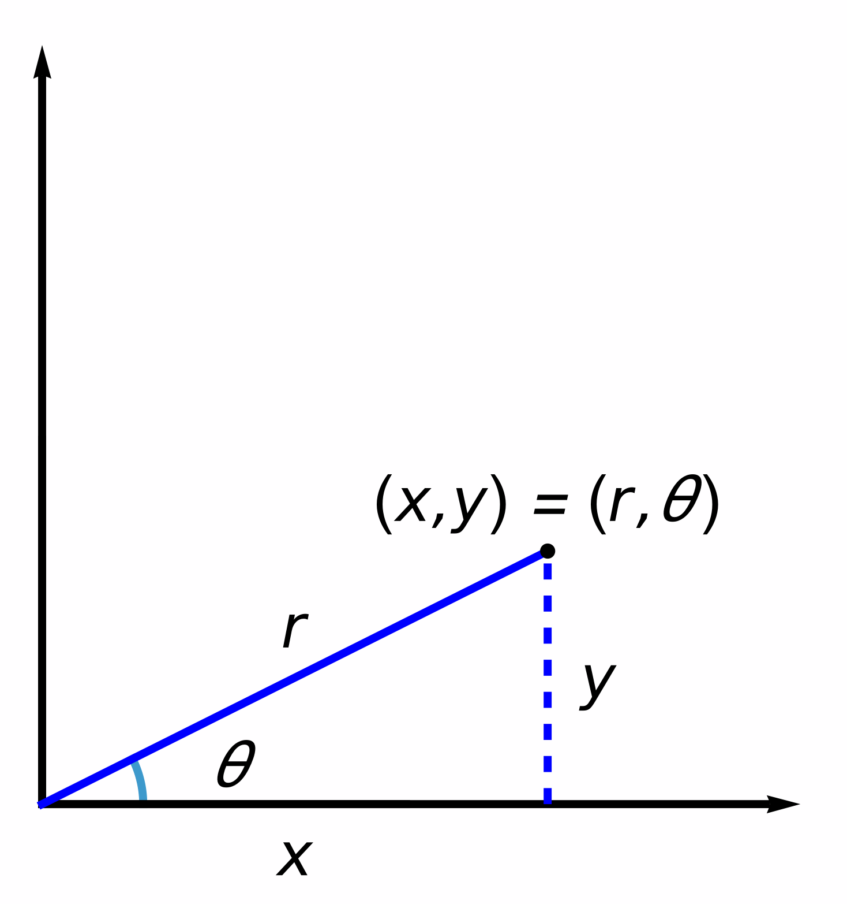
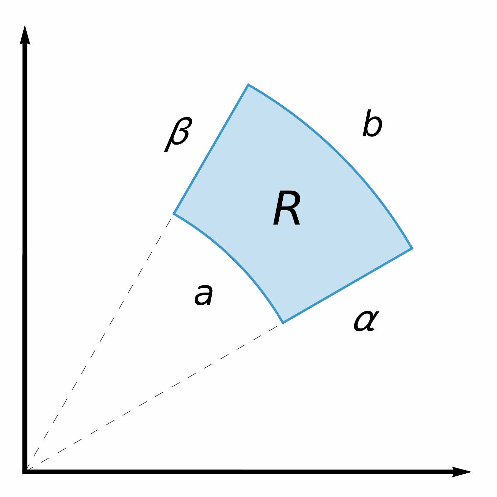
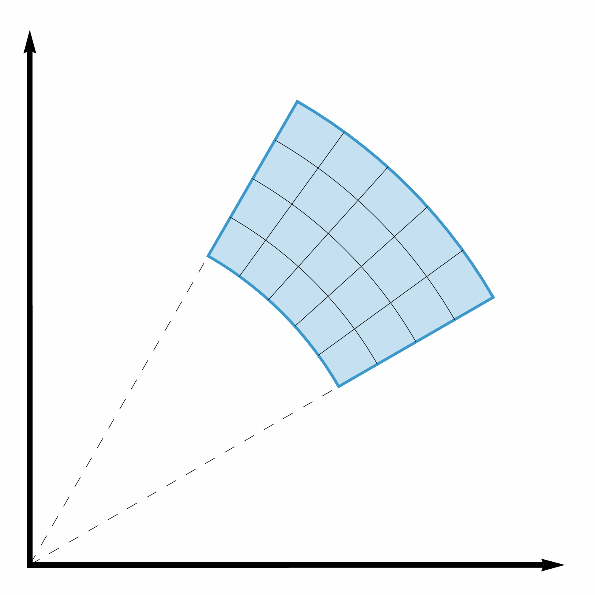
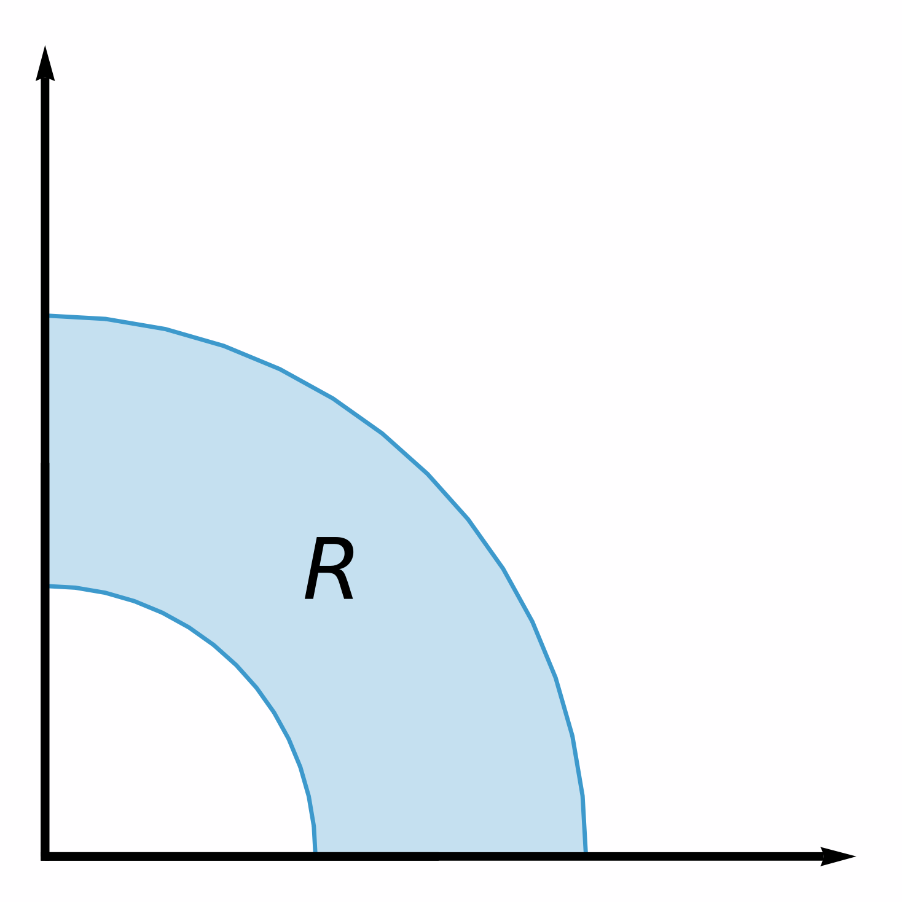
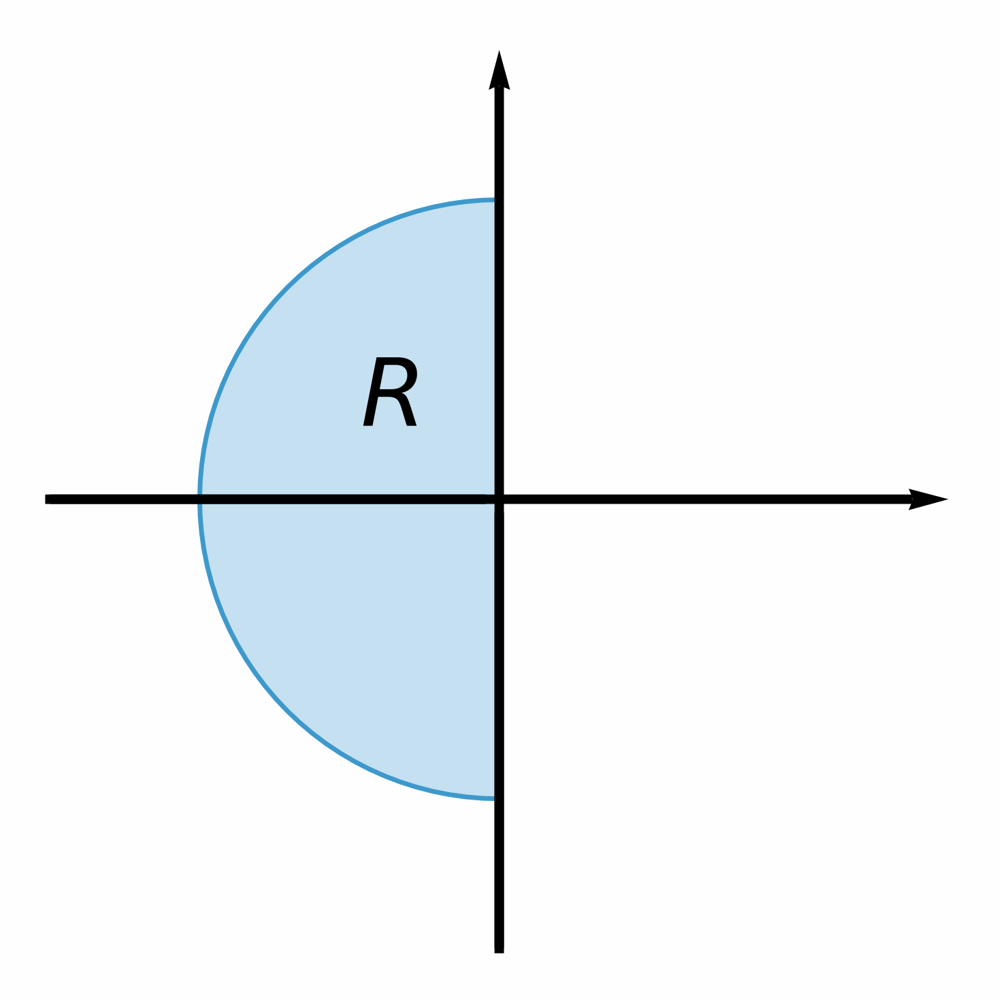
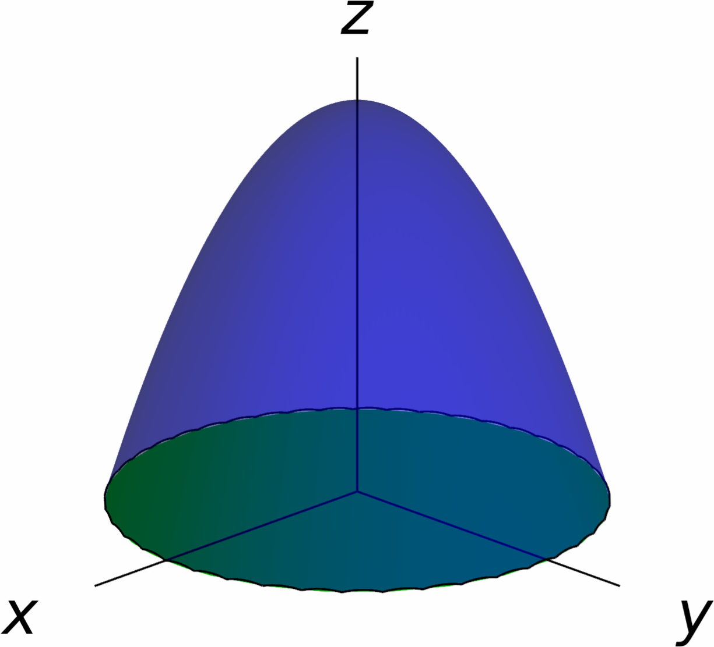

Double Integrals in Polar Coordinates
One of the essential techniques for computing integrals of functions of one variable was changing variables (also known as $u$-substitution). In essence, when computing an integral of the form $\int_a^bf(x)\,dx$, it is sometimes useful to write $x$ as a function of an auxiliary variable $u$, say $x=\varphi(u)$. The change of variables formula then says that \[ \int_{a}^{b}f(\varphi(u))\varphi'(u)\,du = \int_{\varphi(a)}^{\varphi(b)} f(x)\,dx. \]
There is a two-dimensional version of the change of variables formula for integration, but this formula is beyond the scope of this course. For the purposes of the course, we will content ourselves with discussing a particular change of variables for double integrals: changing to polar coordinates.
Recall that if $(x,y)$ is a point in the plane, then the polar coordinates $(r,\theta)$ of $(x,y)$ are related to the (Cartesian/rectangular) coordinates $(x,y)$ by the equations \[ \begin{aligned} r&=\sqrt{x^2+y^2},\\ x&=r \cos \theta,\\ y&=r \sin \theta. \end{aligned} \] The picture on the right describes the relationship between $(x,y)$ and $(r,\theta)$.

Integration over Polar Rectangles
Suppose that we are given a continuous function $z=f(x,y)$, defined on a polar rectangle of the form \[ R=\big\{(r,\theta)\mid a\leq r\leq b,\,\alpha\leq \theta\leq\beta\big\}. \] We will assume furthermore that $0\leq \beta-\alpha\leq 2\pi$. Our objective is to compute the integral \[ \iint_R f(x,y)\,dA. \] To do this, we will first partition $R$ into smaller (polar) subrectangles. More specifically, we choose a sequence \[a=r_0 < r_1 < \cdots < r_m= b \] where the distance between each two terms is $\Delta r=(b-a)/m$, together with a sequence \[\alpha=\theta_0<\theta_1<\cdots<\theta_n=\beta\] where the distance between each two terms is $\Delta\theta=(\beta-\alpha)/n$.


We have thus partitioned $R$ into subrectangles of the form \[ R_{ij}=\big\{(r,\theta)\mid r_{i-1}\leq r\leq r_i,\,\theta_{j-1}\leq \theta\leq\theta_j\big\}. \] Observe that the area of $R_{ij}$ is \[ A(R_{ij})=\frac{\Delta\theta}{2\pi}\cdot \pi(r_{i}^2-r_{i-1}^2) =\frac{r_{i-1}+r_i}{2}\Delta r\,\Delta\theta. \] Now, for each rectangle $R_{ij}$, choose $(\overline{r_{i}},\overline{\theta_{j}})$ to be the center point of $R_{ij}$, with respect to polar coordinates: \[ \overline{r_{i}}=\frac{r_i+r_{i-1}}{2},\quad \overline{\theta_{j}}=\frac{\theta_j+\theta_{j-1}}{2}. \] Then, an approximation of $\iint_R f(x,y)\,dA$ is \[ \iint_R f(x,y)\,dA \approx \sum_{i=1}^m\sum_{j=1}^n A(R_{ij})f(\overline{r_i}\cos\overline{\theta_j},\overline{r_i}\sin\overline{\theta_j}) = \sum_{i=1}^m\sum_{j=1}^n \overline{r_i}f(\overline{r_i}\cos\overline{\theta_j},\overline{r_i}\sin\overline{\theta_j})\Delta r\, \Delta \theta. \] As we make $n,\,m\to\infty$, these approximations get closer to the value of our integral: \[ \lim_{m \to \infty\\ n\to \infty} \sum_{i=1}^m\sum_{j=1}^n \overline{r_i}f(\overline{r_i}\cos\overline{\theta_j},\overline{r_i}\sin\overline{\theta_j})\Delta r\, \Delta \theta = \iint_R f(x,y)\,dA. \] However, from the definition of double integral, we see that the right hand side is also equal to \[ \begin{aligned} \lim_{m \to \infty\\ n\to \infty} \sum_{i=1}^m\sum_{j=1}^n \overline{r_i}f(\overline{r_i}\cos\overline{\theta_j},\overline{r_i}\sin\overline{\theta_j})\Delta r\, \Delta \theta =& \int_\alpha^\beta\int_a^b rf(r \cos \theta,r\sin\theta)\,dr\,d\theta \\=& \int_a^b\int_\alpha^\beta rf(r \cos \theta,r\sin\theta)\,d\theta\,dr. \end{aligned} \]
Thus, we can compute double integrals on polar rectangles by means of the following change of variables formula:
In other words, to compute the integral in polar coordinates we set $x=r \cos\theta$ and $y=r \sin\theta$, and we multiply the whole function by $r$.
Solution.
Looking at the picture in the right, we see that this region can be described in polar coordinates as \[ R = \bigg\{(r,\theta)\mid 1\leq r\leq 2,\,0\leq\theta\leq\frac{\pi}2\bigg\}. \] Therefore, changing to polar coordinates we obtain \[ \iint_R (x^2-y)\,dA = \int_0^{\frac{\pi}2}\int_1^2r(r^2\cos^2\theta-r\sin\theta)\,dr\,d\theta. \]

We compute the double integral in question: \[ \begin{aligned} \int_0^{\frac{\pi}2}\int_1^2r(r^2\cos^2\theta-r\sin\theta)\,dr\,d\theta =& \int_0^{\frac{\pi}2}\int_1^2(r^3\cos^2\theta-r^2\sin\theta)\,dr\,d\theta = \int_0^{\frac{\pi}2}\bigg[\frac{r^4}4\cos^2\theta-\frac{r^3}3\sin\theta\bigg]_{r=1}^{r=2}\,d\theta \\ =& \int_0^{\frac{\pi}2}\bigg(\frac{15}{4} \cos ^2\theta -\frac{7 }{3}\sin \theta \bigg)\,d\theta = \frac{15}4\int_0^{\frac{\pi}2}\cos ^2\theta\,d\theta -\frac{7 }{3}\int_0^{\frac{\pi}2}\sin \theta \,d\theta\\ =& \frac{15 \pi }{16}-\frac{7}{3}. \end{aligned} \]
Solution.
From the bounds of integration, we see that the iterated integral in question is \[ \int_{-2}^2\int_{-\sqrt{4-y^2}}^0(x^2+y^2)\,dx\,dy = \iint_R (x^2+y^2)\,dA \] for the region \[ R=\bigg\{ (x,y)\mid -2\leq y\leq 2,\,-\sqrt{4-y^2}\leq x\leq 0 \bigg\}. \]
Looking at the picture in the right, we see that this region is given (in polar coordinates) as \[ R = \bigg\{(r,\theta)\mid 0\leq r\leq 2,\,\frac{\pi}2\leq\theta\leq\frac{3\pi}2\bigg\}. \] Thus, the change of variables formula gives

Solution.
We see that the intersection of the plane
$z=0$ and the paraboloid
$z=9-x^2-y^2$
is the circle $x^2+y^2=9$ centered at the origin
and with radius $3$.
Consequently, the volume of $S$ is equal to
\[
\iint_R(9-x^2-y^2)\,dA,
\]
where $R$ is the disk centered at $(0,0)$
with radius $3$.
Now, we can describe $R$ in polar coordinates as
\[
R
=
\big\{(r,\theta)\mid 0\leq r\leq 3,\,0\leq \theta\leq 2\pi\big\}.
\]

Now, the change of variables formula for polar coordinates yields \[ \begin{aligned} \iint_R(9-x^2-y^2),\,dA =& \int_0^3\int_0^{2\pi} r(9-r^2\cos^2\theta-r^2\sin^2\theta)\,d\theta\,dr = \int_0^3\int_0^{2\pi}r(9-r^2)\,d\theta\,dr \\ =& 2\pi\int_0^3(9r-r^3)\,dr = 2\pi\bigg[\frac92r^2-\frac14r^4\bigg]_{r=0}^{r=3} = \frac{81\pi}{2}. \end{aligned} \]